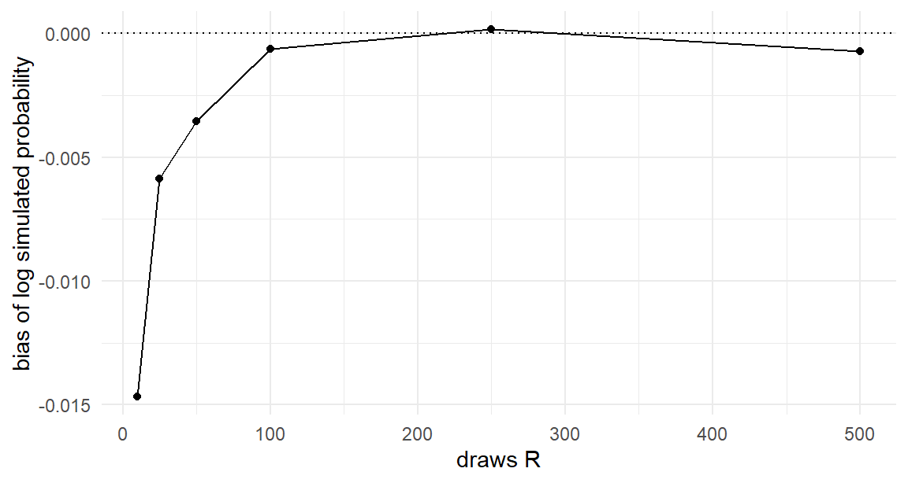
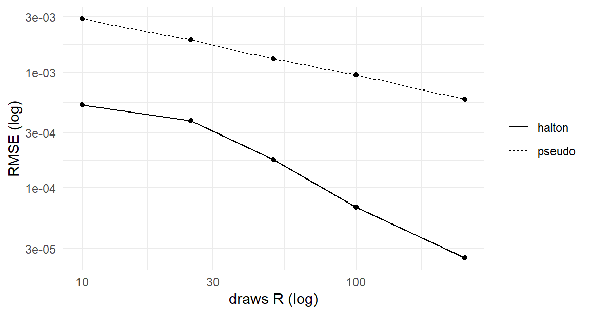

The chapters so far split cleanly in two. When the choice probability has a closed form (logit, nested logit), we write the likelihood and climb it. When it doesn’t — we haven’t faced that case yet, but the mixed logit (Chapter 13) and probit (Chapter 18) are waiting — the likelihood contains an integral we cannot evaluate. This chapter builds the bridge between the book’s two oldest ideas: integrals can be simulated (Chapter 1), and likelihoods can be maximized (Chapter 6). Put a simulated integral inside a maximized likelihood and you get maximum simulated likelihood (MSL), the workhorse frequentist estimator for the models in the rest of this book.
The combination is not free. Simulation noise inside a likelihood does subtle things — it biases the estimator (slightly, controllably), it can destroy the optimizer (badly, avoidably), and managing both is a small craft with firm rules. We develop the rules on a model chosen to be the smallest honest example: rich enough that its likelihood genuinely requires simulation, small enough that every moving part stays visible.
12.1 A Likelihood With an Integral in It
Return to the binary laptop setting of Part I, with one upgrade. Each of \(N\) shoppers now faces \(T = 8\) buy/no-buy offers (a panel, as in Chapter 11), and shoppers differ in their baseline propensity to buy: some are in the market, some are barely browsing. Utility for shopper \(n\) at offer \(t\):
The intercept is now a random coefficient: each person draws their own \(\beta_{0n}\) once, keeps it for all eight offers, and we never observe it. This is continuous heterogeneity — Chapter 11’s discrete classes melted into a normal distribution — and the parameters to estimate are \(\boldsymbol{\theta}= (\mu_0, \sigma_0, \boldsymbol{\beta})\): the population’s mean baseline, its spread, and the common attribute coefficients.
Follow the likelihood logic of Chapter 11 exactly. Conditional on \(\beta_{0n}\), person \(n\)’s eight choices are independent binary logits, so their sequence probability is a product of Equation 1.6 terms. Unconditionally, we must average over what \(\beta_{0n}\) might have been — but now membership is a continuum, so the class sum becomes an integral:
with \(P_{nt}(b, \boldsymbol{\beta})\) the logit probability of person \(n\)’s observed choice at offer \(t\) given intercept \(b\), and \(\phi(\cdot \mid \mu_0, \sigma_0^2)\) the \(N(\mu_0, \sigma_0^2)\) density (mind that R’s dnorm() takes the standard deviation). The mixture-outside-the-product lesson carries over unchanged — the integral wraps the whole sequence, because the person keeps their draw across tasks. And this integral has no closed form. The logistic-kernel-times-normal-density integrand defeats every table of integrals ever compiled;1 the log-likelihood \(\ell(\boldsymbol{\theta}) = \sum_n \log \Pr(\mathbf{y}_n|\boldsymbol{\theta})\) simply cannot be evaluated exactly.
12.2 The Simulated Probability
But we can simulate it — this is precisely Chapter 1’s insight, upgraded from choice probabilities to sequence probabilities. Equation 12.2 is an expectation over \(\beta_{0n}\)’s distribution, so draw \(R\) values from that distribution and average the integrand:
Note carefully how the draws enter: we draw standard normals \(z_n^{(r)}\) and map them through the current parameter values — the location-scale transformation of Chapter 2. This detail is about to matter enormously.
The simulated probability is unbiased for the true probability at any \(R\) — each term is the integrand at a correctly-distributed draw, so the average’s expectation is the integral. Unbiasedness of the probability simulator is the property everything else leans on. Which makes the next fact sting:
12.3 The Simulated Log-Likelihood Is Biased
The likelihood wants \(\log \Pr(\mathbf{y}_n)\), and the log of an unbiased simulator is not an unbiased simulator of the log. The culprit is Jensen’s inequality: the logarithm is concave, so \(\mathrm{E}[\log \widehat{P}] < \log \mathrm{E}[\widehat{P}] = \log P\) — simulation noise, passed through a concave function, pushes downward on average. How far downward? Write the simulator’s relative error as \(\widehat{P} = P(1 + \epsilon)\) with \(\mathrm{E}[\epsilon] = 0\), and expand the log: \(\log \widehat{P} = \log P + \epsilon - \epsilon^2/2 + \cdots\), so \(\mathrm{E}[\log \widehat{P}] - \log P \approx -\tfrac{1}{2}\mathrm{Var}(\epsilon)\). The bias is, to leading order, minus half the simulator’s relative noise variance — and since \(\widehat{P}\) averages \(R\) independent terms, that variance, and hence the bias, shrinks like \(1/R\). Anything that reduces noise reduces bias, a fact the Halton section below exploits. Rather than cite Jensen and move on, let’s measure the bias, because seeing its size and its cure builds the right instincts. Take a single known quantity — a sequence probability with true value we can compute to machine precision by brute-force quadrature — and simulate it 2,000 times at each of several \(R\):
set.seed(120)## one person's integrand: T=8 logit terms at fixed x's and choicesV_fix <-c(0.8, -0.3, 0.5, -1.0, 0.2, 0.9, -0.6, 0.1) # x't*beta for 8 tasksy_fix <-c(1, 0, 1, 0, 1, 1, 0, 1)seq_prob <-function(b) { P <-plogis(V_fix + b)prod(ifelse(y_fix ==1, P, 1- P))}## truth by fine quadrature over b ~ N(0.5, 1)grid <-seq(-6, 7, by =0.001)truth <-sum(sapply(grid, seq_prob) *dnorm(grid, 0.5, 1)) *0.001bias_at_R <-sapply(c(10, 25, 50, 100, 250, 500), function(R) { lp <-replicate(2000, { b <-rnorm(R, 0.5, 1)log(mean(sapply(b, seq_prob))) })c(R = R, bias =mean(lp) -log(truth))})ggplot(data.frame(t(bias_at_R)), aes(R, bias)) +geom_hline(yintercept =0, linetype ="dotted") +geom_line() +geom_point() +labs(x ="draws R", y ="bias of log simulated probability")

Figure 12.1: The simulation bias of the log: average simulated log-probability minus the truth, across 2,000 simulation replications, as the number of draws R grows. The probability simulator is unbiased at every R; its log is biased downward, with bias shrinking like 1/R.
Three facts, all visible in the figure and all provable (Train 2009, sec. 10.2; the asymptotic theory is McFadden and Train 2000, sec. 3): the bias is negative; it shrinks like \(1/R\), exactly as the expansion predicts (halve it by doubling draws — faster than the \(1/\sqrt{R}\) noise rate); and at \(R\) in the low hundreds it is already tiny for a probability like this one. The formal requirement for MSL to behave exactly like ML asymptotically is that \(R\) grow faster than \(\sqrt{N}\) — in practice: more draws for bigger samples, and never trust \(R = 10\). We will choose \(R\) empirically below, and revisit the question with higher stakes in Chapter 13.
12.4 Rule One: Fix the Draws
Now the rule that separates working MSL code from mysteriously broken MSL code. The optimizer will evaluate the simulated log-likelihood at hundreds of candidate \(\boldsymbol{\theta}\) values, and it compares those values — the whole logic of hill-climbing (Chapter 6) assumes that when \(\ell(\boldsymbol{\theta}_1) > \ell(\boldsymbol{\theta}_2)\), the surface really is higher at \(\boldsymbol{\theta}_1\). If each evaluation draws fresh randomness, then comparisons mix true surface differences with luck-of-the-draw differences: the surface itself jitters between evaluations. Gradients computed by finite differences (Equation 6.5) are hit hardest — the difference of two nearby, independently-noisy values is mostly noise — and the optimizer stalls, wanders, or “converges” wherever the jitter happened to smile.
The cure costs nothing, because of how Equation 12.3 was written: the randomness enters as standard normal draws \(z_n^{(r)}\), mapped through the candidate parameters. So draw the \(z\)’s once, before optimization begins, and reuse the same array at every evaluation. The simulated surface becomes a fixed, smooth, deterministic function of \(\boldsymbol{\theta}\) — a slightly wrong surface (that’s the bias we just measured), but a stable one that an optimizer can climb.2 This is why the location-scale separation matters: parameters move, draws don’t. File it with Chapter 9’s precompute-the-invariant principle: the draws are data now.
Watch the failure and the fix side by side — same data, same optimizer, the only difference being whether the draws are redrawn inside the objective:
## simulated log-likelihood; draws passed in (fixed) or NULL (redrawn: broken)sll_re <-function(theta, y, Xp, id, N, Z =NULL, R =100) { mu0 <- theta[1] sig0 <-exp(theta[2]) # reparameterize: sigma > 0 always beta <- theta[3:4]if (is.null(Z)) Z <-matrix(rnorm(N*R), N, R) # DON'T do this R <-ncol(Z) # draw count follows the draws V <-as.vector(Xp %*% beta) # common part, all NT rows lseq <-matrix(0, N, R)for (r in1:R) { b <- mu0 + sig0 * Z[, r] # location-scale map of fixed z's P <-plogis(V + b[id]) # all NT probabilities under draw r Pyt <-ifelse(y ==1, P, 1- P) lseq[, r] <-as.vector(rowsum(log(Pyt), id)) # per-person log seq prob } M <-apply(lseq, 1, max) # log-sum-exp across draws, per personsum(M +log(rowMeans(exp(lseq - M))))}
Implementation notes before the experiment. The for (r in 1:R) loop is the tolerable loop of Chapter 9’s hybrid doctrine — a hundred iterations, each fully vectorized over all \(NT\) rows, versus thousands if we looped over people. sig0 = exp(theta[2]) is the reparameterization promised in Chapter 10’s footnote: optimize \(\log\sigma_0\) unconstrained, and positivity takes care of itself. And averaging \(\prod_t P_{nt}\) across draws is done on the log scale with a per-person max-shift — Section 8.3 yet again, essential here because eight-term products are exactly the small numbers that underflow.
set.seed(122)Z_fixed <-matrix(rnorm(N*100), N, 100)start <-c(0, log(1), 0, 0)fit_fixed <-optim(start, sll_re, y = y, Xp = Xp, id = id, N = N,Z = Z_fixed, method ="BFGS",control =list(fnscale =-1))fit_fresh <-optim(start, sll_re, y = y, Xp = Xp, id = id, N = N,Z =NULL, method ="BFGS",control =list(fnscale =-1, maxit =500))rbind(truth =c(mu0 =1.0, log_sig0 =log(1.5), beta_true),fixed = fit_fixed$par,fresh = fit_fresh$par)
The fixed-draw fit recovers everything — note \(\exp(\hat\theta_2) \approx 1.35\) against \(\sigma_0 = 1.5\). The fresh-draw fit, on the identical problem, lands far from the truth on every coefficient — and, most instructively, its convergence code is a serene 0. The optimizer is not lying, exactly: steps stopped improving the objective, because every proposed move drowned in redrawn noise. It stopped where the jitter trapped it and called that a summit — Chapter 6’s “believing convergence too easily” warning, weaponized. One line of code separates the two fits. This experiment is the cheapest tuition you will ever pay on this topic; the expensive version is three days of debugging a mixed logit.
12.5 Better Draws: Halton Sequences at Work
Section 2.5 promised that quasi-random draws would earn their keep when integrals arrived. They have arrived. Halton draws — qnorm(halton(R, base)), evenly covering the space instead of clumping — reduce the noise of each simulated probability, which reduces both the Jensen bias (driven by noise variance) and the sampling contribution of simulation to the estimator. The standard demonstration: simulate our known sequence probability many times with pseudo-random versus Halton draws3 and compare accuracy at each \(R\):
halton <-function(n, base) { # from @sec-draws r <-numeric(n)for (i in1:n) { f <-1; x <-0; k <- iwhile (k >0) { f <- f/base; x <- x + f*(k %% base); k <- k %/% base } r[i] <- x } r}set.seed(123)rmse_at <-function(R) { pseudo <-replicate(500, mean(sapply(rnorm(R, 0.5, 1), seq_prob)))## Halton: shift the sequence by a random offset each replication hbase <-halton(R +50, 2)[-(1:50)] haltn <-replicate(500, { u <- (hbase +runif(1)) %%1mean(sapply(qnorm(u, 0.5, 1), seq_prob)) })c(R = R, pseudo =sqrt(mean((pseudo - truth)^2)),halton =sqrt(mean((haltn - truth)^2)))}acc <-data.frame(t(sapply(c(10, 25, 50, 100, 250), rmse_at)))ggplot(reshape(acc, direction ="long", varying =c("pseudo", "halton"),v.names ="rmse", timevar ="type",times =c("pseudo", "halton")),aes(R, rmse, linetype = type)) +geom_line() +geom_point() +scale_x_log10() +scale_y_log10() +labs(x ="draws R (log)", y ="RMSE (log)", linetype =NULL)

Figure 12.2: Root mean squared error of the simulated sequence probability against the number of draws, pseudo-random versus Halton (log-log scale). Halton’s systematic coverage delivers the accuracy of several hundred pseudo-random draws with a fraction of the count.
The Halton curve sits well below the pseudo-random curve at every \(R\) — reading horizontally, 50 Halton draws deliver roughly the accuracy of hundreds of pseudo-random draws, consistent with the folklore and with published comparisons (Train 2009, sec. 9.3.4). In multi-person MSL the standard practice refines this slightly (different sequence segments per person, a discarded burn-in, randomized shifts as above — and different prime bases per dimension when Chapter 13 goes multivariate), but the headline stands: when draws approximate integrals, coverage beats randomness, and the draw budget you save is real computing time (Table 9.1).
12.6 How Many Draws? An Empirical Answer
Theory says “\(R\) growing faster than \(\sqrt{N}\)”; practice wants a number. The working procedure is disarmingly simple: re-estimate with increasing \(R\) until the answers stop moving at the precision you care about — the same “increase until stable” logic used for grid resolution or chain length, applied to the draw count. On our problem, with Halton draws throughout:
set.seed(124)fit_at_R <-function(R) {## person n gets segment n of one long Halton sequence, then a common## random shift and the qnorm transform (the scheme @sec-mixed-msl reuses) h <-halton(N*R +50, 2)[-(1:50)] hseg <-matrix(qnorm((h +runif(1)) %%1), N, R, byrow =TRUE)optim(start, sll_re, y = y, Xp = Xp, id = id, N = N,Z = hseg, method ="BFGS", control =list(fnscale =-1))$par}res <-sapply(c(25, 50, 100, 200), fit_at_R)rownames(res) <-c("mu0", "log_sig0", "price", "ram16")round(rbind(res, sigma0 =exp(res[2, ])), 3)
By \(R = 100\) the estimates have settled to the second decimal — the reporting precision of any study — and \(R = 200\) confirms it. That, not a universal constant, is the answer to “how many draws”: enough that doubling them changes nothing you would report. Note the diagnostic is self-service; no theorem consulted, just the estimator interrogated about its own stability.
12.7 The Estimator, Named and Situated
Assemble the pieces formally. The maximum simulated likelihood estimator maximizes \(\sum_n \log \widehat{\Pr}(\mathbf{y}_n|\boldsymbol{\theta})\) with the probability simulated by Equation 12.3 from draws fixed across evaluations. Its properties (McFadden and Train 2000; Train 2009, Ch. 10): consistent and asymptotically equivalent to exact ML provided \(R\) grows suitably with \(N\); standard errors from the Hessian exactly as in Chapter 6.4
MSL has two siblings you should recognize in the literature, both born of the same simulate-the-integral move applied to different estimating equations. The method of simulated moments (MSM) simulates the model’s predicted probabilities and matches them to observed choice frequencies; because the simulated probabilities enter linearly (no log), MSM is consistent even at fixed small \(R\) — the Jensen problem never arises — at some cost in efficiency and in the craft of choosing moments. The method of simulated scores (MSS) simulates the score equation itself, seeking ML’s efficiency without the log’s bias; its difficulty is that unbiased score simulators are hard to construct. MSL’s dominance in practice comes down to convenience: it is the estimator you already know (Chapter 6) with a simulator inside, and its bias is manageable by the \(R\)-doubling diagnostic above. We follow practice.
One more sibling deserves a placement note: the random-parameter models estimated here and in Chapter 13 by MSL are estimated in Chapter 17 by Markov chain Monte Carlo instead — same models, different engine — and the comparison between the two engines is the hinge on which this book turns (Chapter 14). Keep the mental bookmark.
12.8 Key Learnings
When heterogeneity is continuous, the class sum of Chapter 11 becomes an integral (Equation 12.2) with no closed form — but it is an expectation, so the Chapter 1 move applies: simulate it (Equation 12.3), drawing standard normals and mapping them through candidate parameters.
The probability simulator is unbiased; its log is biased downward by Jensen’s inequality — we measured the bias, watched it die at rate \(1/R\), and noted the formal requirement (\(R\) growing faster than \(\sqrt{N}\)).
Fix the draws across evaluations. Fresh randomness per evaluation makes the objective surface jitter and breaks the optimizer — demonstrated live: identical problems, one line different, recovery versus rubble. Draws are data; precompute them.
Reparameterize positive parameters (\(\sigma = e^\theta\)), average products of probabilities on the log scale with max-shifts, and keep the per-draw loop vectorized over rows — the Chapter 9 and Section 8.3 habits, now load-bearing.
Halton draws beat pseudo-random draws decisively for integration (RMSE figure: 50 Halton draws \(\approx\) hundreds of pseudo-random ones); choose \(R\) by the doubling diagnostic — increase until nothing you’d report moves.
MSL = Chapter 6’s climber + a fixed-draw simulator inside; MSM and MSS are the linear-in-simulator and score-based siblings. Next: the same machinery, six correlated dimensions — the mixed MNL.
McFadden, Daniel, and Kenneth Train. 2000. “Mixed MNL Models for Discrete Response.”Journal of Applied Econometrics 15 (5): 447–70.
For one-dimensional integrals like this one, deterministic quadrature (Gauss–Hermite) is actually an excellent alternative and standard in random-effects software. We simulate instead because simulation is the method that scales: Chapter 13 needs this same integral in six dimensions, where quadrature’s cost explodes exponentially and simulation’s does not. Learn the scalable tool on the small problem.↩︎
The same principle under the name common random numbers also governs comparisons across models or specifications: evaluate both with the same draws and the simulation noise largely cancels from the comparison.↩︎
Halton sequences are deterministic, so “many times” needs care: we randomize each replication by shifting the whole sequence by a uniform offset (mod 1) — a randomized quasi-Monte Carlo scheme that preserves the even coverage while making replications comparable.↩︎
With one refinement worth knowing: at modest \(R\), simulation noise adds a small extra variance component that Hessian-based standard errors ignore. The replication audit in the style of Section 8.8 is the honest check, and we run exactly that audit on the full mixed logit in Chapter 13.↩︎